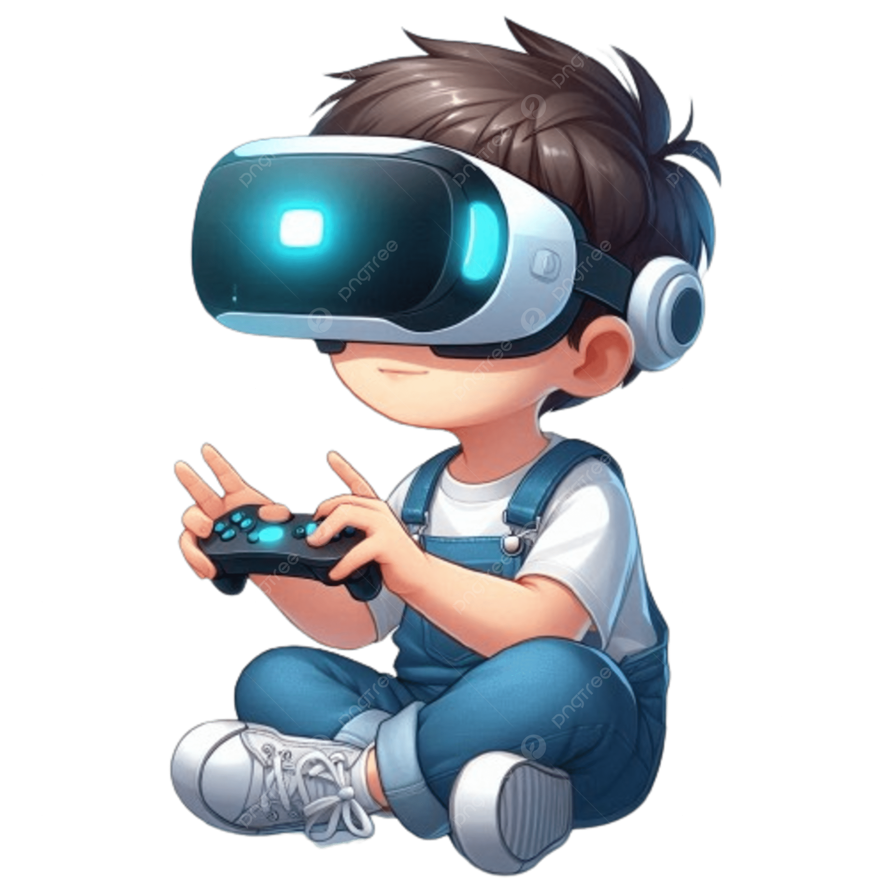

LA GENERACION MULTIMEDIA

Digitalizacion de la vida cotidiana
Los jóvenes construyen su identidad a través de sus consumos culturales, influenciados por medios de comunicación, música y espacios de pertenencia. Han crecido inmersos en un "universo multimedia".
Multiplataforma y Multitarea (interaccion multiple)
Los jovenes entre 11 y 17 años no solo disponen de una gran oferta mediática, sino que la usa de forma simultánea.
Comunicacion Instantánea
Medios de comunicacion rápidos y directos
Impacto en la subjetividad y la educación
Identidad Digital.
Perfil Público.
Respuesta Inmediata(impaciencia).
Aprendizaje y acceso a la informacion
Autodidactas.
Informacion errónea.
Informacion superficial.
Informacion Profunda.